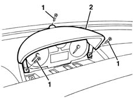
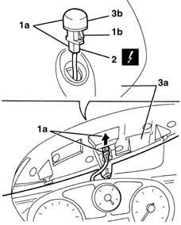

7040A11 control panel lid - r + r
- Path
- Procedures > 70 FITTINGS > 7040 BODYSHELL INTERIOR TRIMS AND FITTINGS > 7040A passenger compartment trim > 7040A11 control panel lid - r + r
- Kind
- repair procedure (removal / refitting; the operation number is the code)
- Applies to
- all engines; all production periods
- Interactive page
- https://sloeber94.github.io/elrnDB-lYpsln/en/#/2429572
Applies to: all engines; all production periods
 Removing
Removing
 Refitting
Refitting5040C12 air conditioner housing - r r with facia disconnected
7040A74 TRIM under control panel - R.R.
1. Undo the bolts.
2. Move the lens cover slightly.

Applies to: all engines; all production periods
1. Push the connector and the solar sensor (1a) outwards releasing the retainers (1b).
2. Disconnect the electrical connection for the solar sensor.
 | Name | Connector |
|---|---|---|
2 | Solar sensor |
3. Keep the lens cover (3a) and the solar sensor (3b).

Applies to: all engines; all production periods
Refitting
RemovingCheck that the panel lid is undamaged.
Connect the solar sensor and fit it in place attaching the retainers.
Position the lens cover and fasten it using the bolts.
7040A74 TRIM under control panel - R.R.
5040C12 air conditioner housing - r r with facia disconnected
Topics linked from this page (3)
- 5040C12 air conditioner housing - r r with facia disconnected
- 7040A74 TRIM under control panel - R.R.
- K90 Solar sensor
Topics that link to this page (12)
- 5010D56 solar sensor - r r after checking electrical system
- 5020B10 heater control support - r+r
- 5020B35 outdoor/recirculation air intake flap control cable - r r
- 5020B38 air distribution flap control cable - r+r
- 5020B42 air mixer flap control cable - r+r
- 5040C10 air conditioner box - r+r
- 5040D75 Air conditioning recirculation flap control MOTOR - R.R.
- 5560B10 analogue control panel - r+r
- 5580C22 AIR BAG MODULE - Passenger side - R.R.
- 7040A10 instrument facia trim - r+r
- 7040A25 central facia trim - r r
- 7040L10 cabin floor carpet - r r